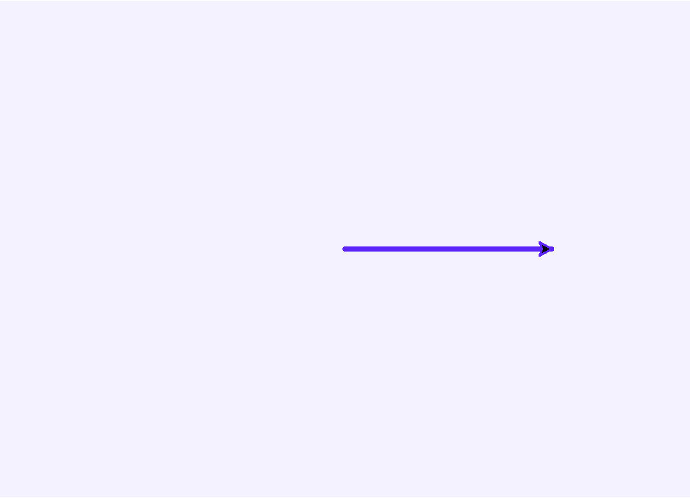
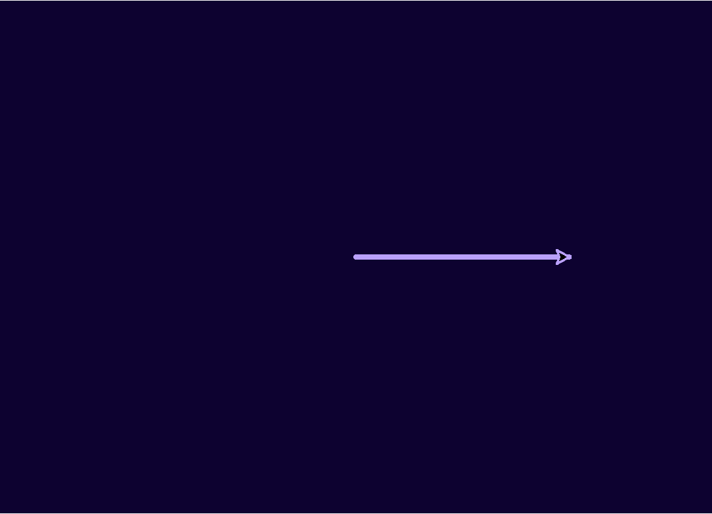

Глава 7 · Глубокое погружение в Turtle
Экран как графическая система
Прежде чем рисовать что-то сложнее квадратов, разберёмся, что вообще значит «размер» в Turtle — окно, холст и координатный мир не одно и то же.
В главе 6 мы уже создавали окно и черепашку — но не разбирались, что вообще внутри происходит. Начнём с того, что Turtle — это не просто «нарисовать линию», а настоящая графическая система с несколькими слоями.
Три разные вещи, которые легко перепутать
Когда мы говорим о «размере» в Turtle, на самом деле речь может идти о трёх разных вещах:
РАБОЧИЙ СТОЛ
ОКНО TURTLE (screen.setup)
ХОЛСТ (screen.screensize)
координатный мир: любые числа x, y
- Окно — то, что видно на экране компьютера, размер задаёт
screen.setup(). - Холст — область, на которой можно рисовать; обычно совпадает с окном, но может быть и больше (тогда появляются полосы прокрутки) — размер задаёт
screen.screensize(). - Координатный мир — числа x и y, которыми мы оперируем в коде; они ничем не ограничены и не обязаны совпадать с пикселями окна один в один.
Для начала достаточно setup()
В подавляющем большинстве учебных программ довольно одного
screen.setup() — окно и холст совпадают, и думать о разнице не приходится. screensize() нужен реже — например, когда рисунок больше, чем разумно показывать на экране целиком.Настраиваем окно: до и после
Три команды экрана — заголовок, цвет фона и размер:
svetlaya_tema.py
import turtle
screen = turtle.Screen()
screen.setup(width=500, height=360)
screen.title("Cartesian Turtle Studio")
screen.bgcolor("#F5F2FF")
artist = turtle.Turtle()
artist.pencolor("#5B24F9")
artist.pensize(3)
artist.forward(150)
screen.exitonclick()Результат выполнения

svetlaya_tema_kod.py
screen.setup(width=700, height=500)
screen.title("Cartesian Turtle Studio")
screen.bgcolor("#F5F2FF")Меняем только цвет фона — вся остальная логика рисования остаётся той же:
temnaya_tema.py
import turtle
screen = turtle.Screen()
screen.setup(width=500, height=360)
screen.title("Cartesian Turtle Studio — Dark")
screen.bgcolor("#0D0230")
artist = turtle.Turtle()
artist.pencolor("#B9A0FC")
artist.pensize(3)
artist.forward(150)
screen.exitonclick()Результат выполнения

Практика: настройка экрана как системы
Модуль turtle открывает нативное окно Python — выполните локально в VS Code, PyCharm или Jupyter